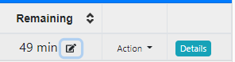
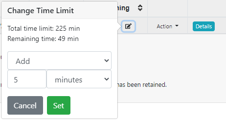
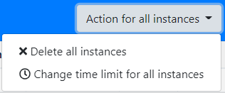

Jonatan Schroeder has implemented a very helpful feature for running exams in PrairieLearn: allowing instructors to change time limits for exams after they have been started. This allows instructors to fix time limit misconfigurations, add extra time for logistical issues, or provide last-minute accommodations for individual students. Time limit changes can be made for particular students or for all students.
To change a time limit, open the "Students" tab for the assessment. Time limits for individual students can be changed using the edit button () in the "Remaining" column, as shown below:
The button above gives a variety of options for how to change the time limit, including adding time, subtracting time, setting the total exam time, or setting the remaining time. It's also possible to remove the time limit completely and give unlimited time, or to "Expire" the time limit to finish the exam immediately.
To change the time limit for all students currently taking the assessment, the button "Action for all instances" provides an interface to change all instances, with similar options:
Time limit changes can be done based on a specific number of minutes, or based on a percentage of the current time limit. For example, all students can be given 20% extra time. The percentage option is recommended for assessments where some students have special accommodations (e.g., students with 50% extra time), since it allows these students to maintain the same ratio of additional time.